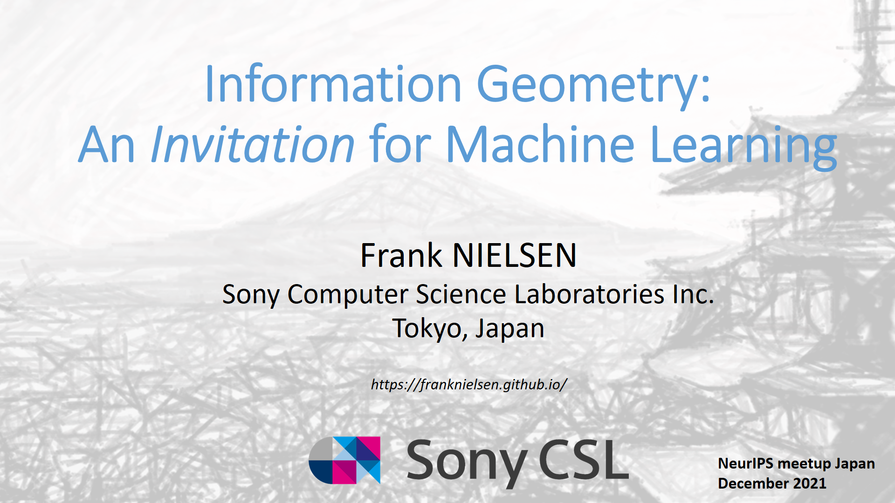
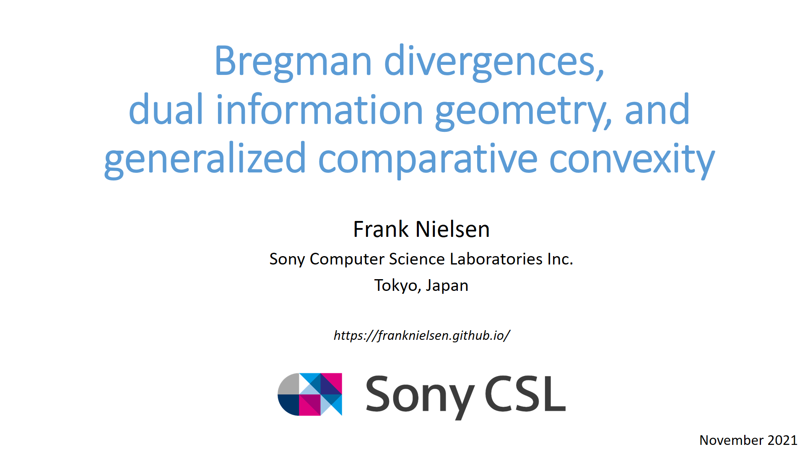

Slides & Videos
Selected slides
Information Geometry: An Invitation for Machine Learning
,
NeurIPS Meetup Japan
(14th December 2021)

Bregman divergences, dual information geometry, and generalized comparative convexity
(November 2021)

🡆 Other slides on
Slidesshare.net
Selected video
Visualizing hyperbolic Voronoi diagrams
Symposium on Computational Geometry Video (2014): [
Video PDF
]
[PDF
Hyperbolic Voronoi diagrams made easy
, ICCSA 2010] [
Project portal
]
The dual geometry of Shannon information and its applications
Shannon 100th birthday celebration (28/10/2016): [
Slides
]
Visualizing Bregman Voronoi diagrams
Symposium on Computational Geometry Video (2007): [
Video PDF paper
]
[PDF
Bregman Voronoi diagrams
, Discrete & Computational Geometry, 2010]
On Approximating the Smallest Enclosing Bregman Balls
Symposium on Computational Geometry Video (2006): [
Video PDF paper
]
[PDF
Fitting the Smallest Enclosing Bregman Ball
, ECML 2005]
🡆 Other video on
YouTube
channel